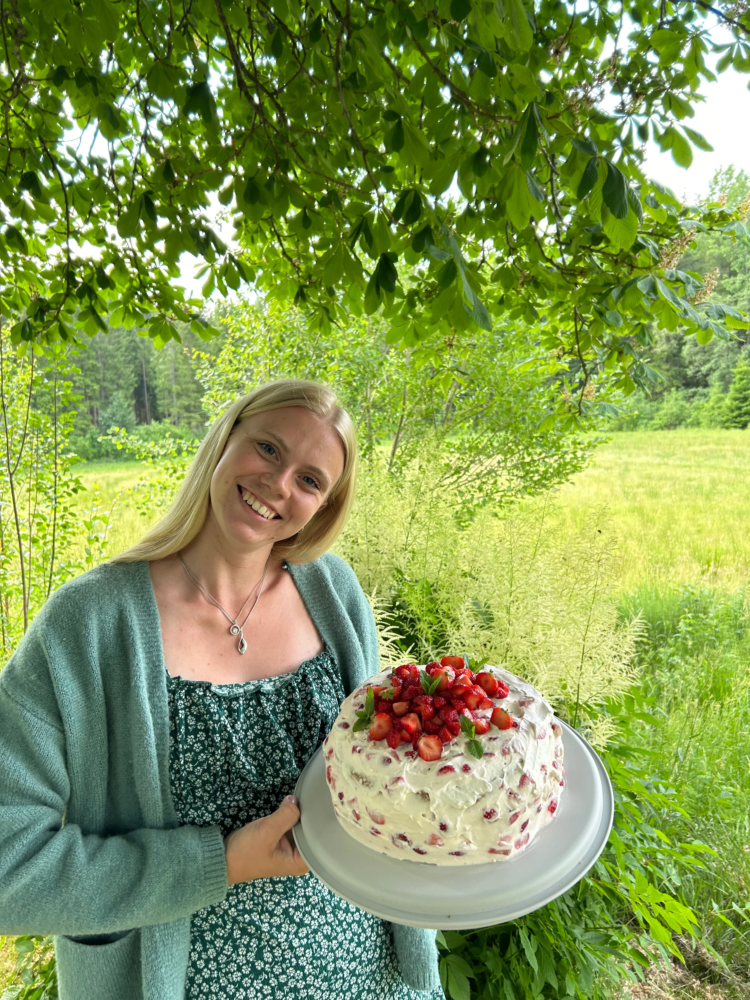
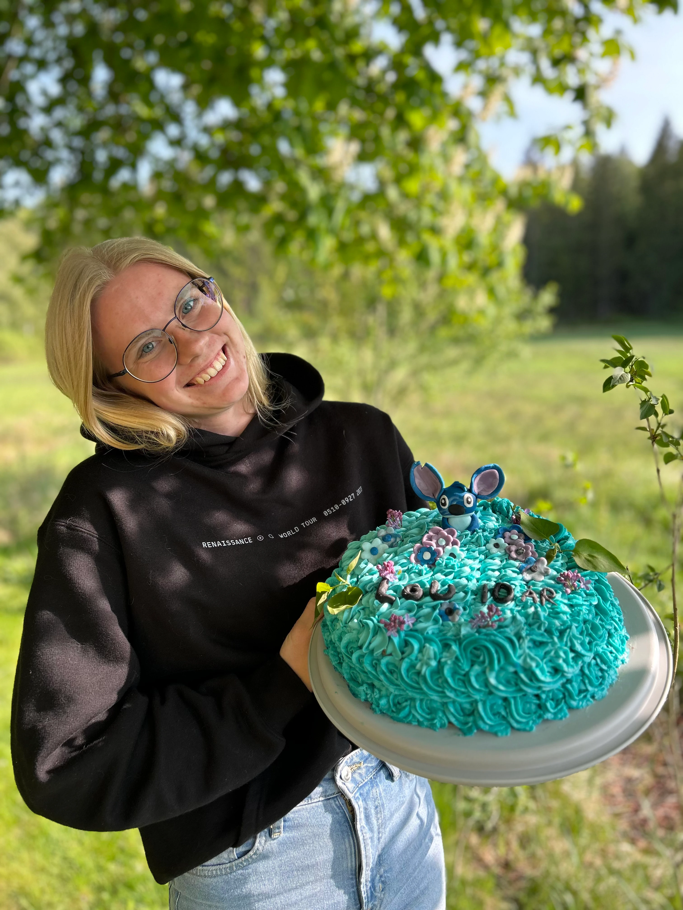
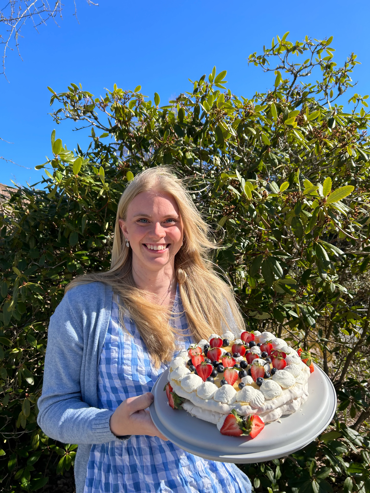
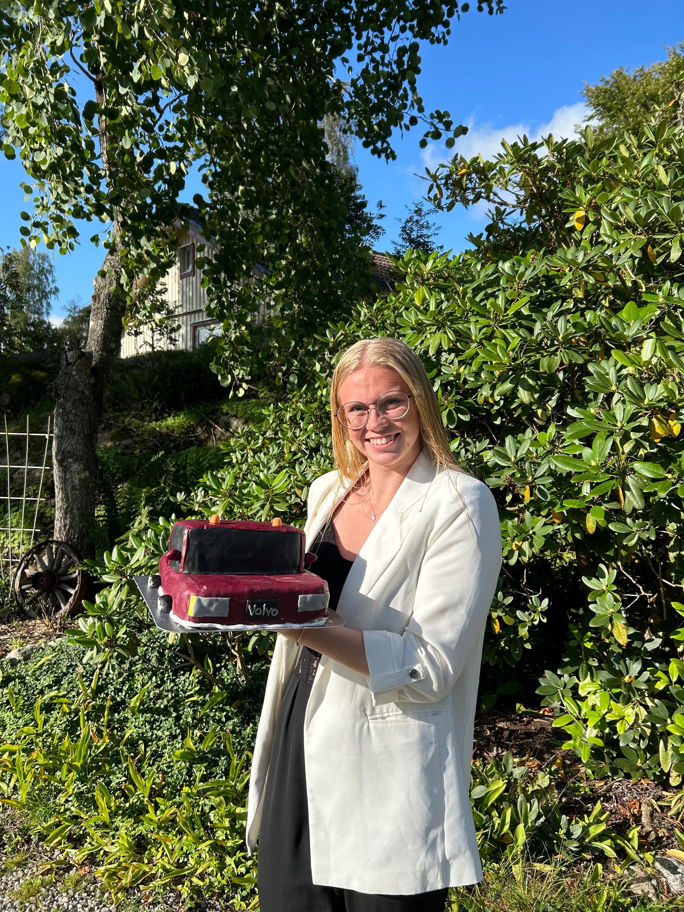
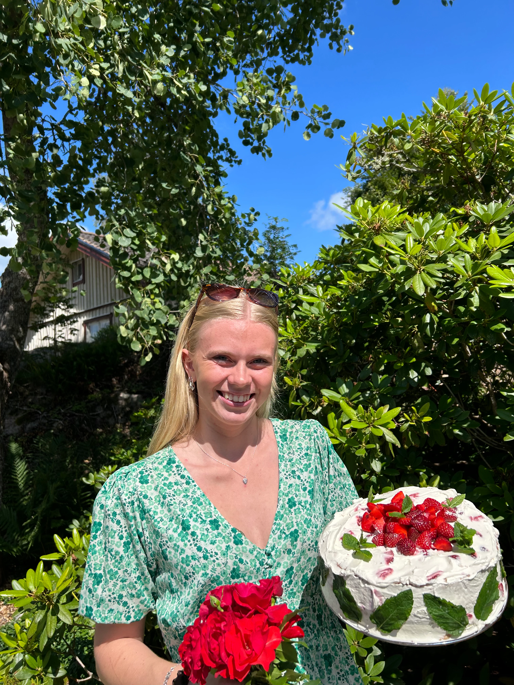
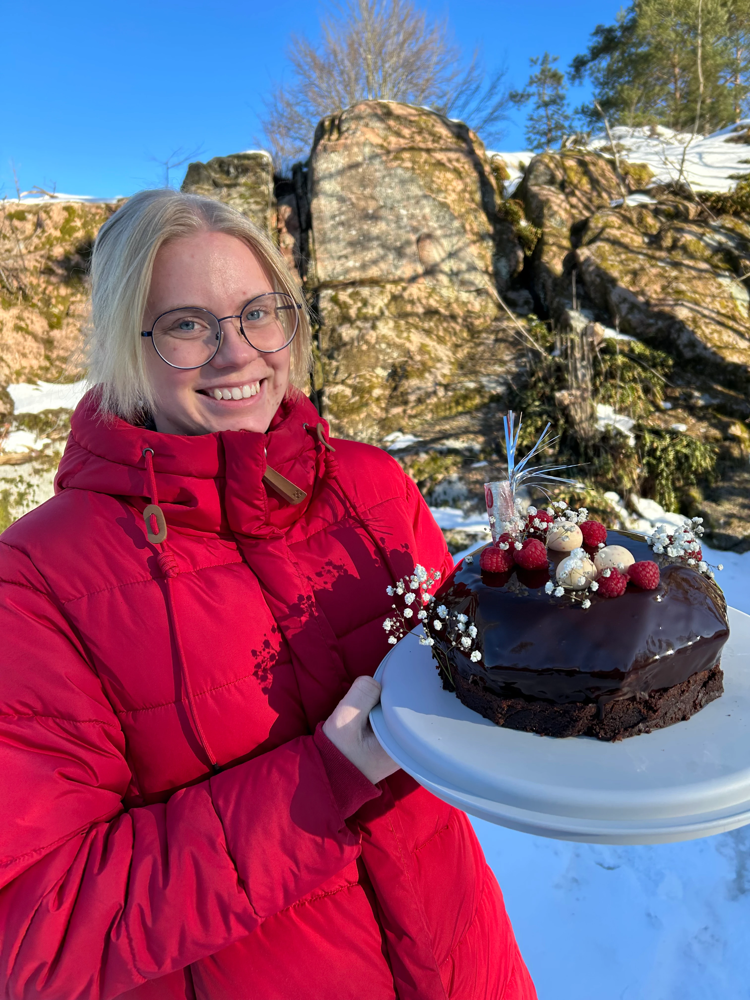

Om Jojo's
Mitt namn är Josefine Johansson, jag är tjugo år gammal och kommer ifrån den lilla orten Munkedal, ca 2 mil norr om Uddevalla. Jag är uppväxt på landet med en stor familj och många djur.

Jag ser fram emot att få baka åt er nästa gång ni ska ha kalas och hoppas att ni kommer att bli nöjda med mina tårtor.
Ända sedan jag var liten har jag tyckt om att baka. På gymnasiet gick jag programmet restaurang och livsmedel men ej med inriktning på bageri, något jag har kommit att ångra i efterhand.

Jag har bakat på diverse olika jobb sedan gymnasiet vilket har fått mig in tårt-spåret. Jag började mestadels göra tårtor åt den närmsta familjen såsom kalas och babyshowers.

Ordet om tårtorna spred sig snabbt till syskonens bekanta och andra i min krets. Det gjorde mig självklart väldigt glad och jag såg en möjlighet i bakandet. Ett behov av fina tårtor som inte tömmer plånboken fanns där hos den vanliga “Svensson” familjen.

Tjocka bottnar med maffiga fyllningar är vanligt hos egenföretagare idag, det är enkelt att bygga höga och jämna tårtor på det sättet. Min stil skiljer sig lite där, jag grundar min bakning i sättet man gör prinsesstårtor på.

Det innebär luftiga bottnar med mycket av fräscha fyllningar. Jag är självklart flexibel och gör allt enligt beställning utefter kundens smak och önskemål.

Eftersom jag bor där jag bor så blir tårtleveranserna ofta lokala, tveka inte att höra av er för jag möter er gärna på vägen. Mitt bakande får mer och mer spridning, det är självklart väldigt roligt och jag hoppas att fler och fler tänker på mig när de behöver en tårta.